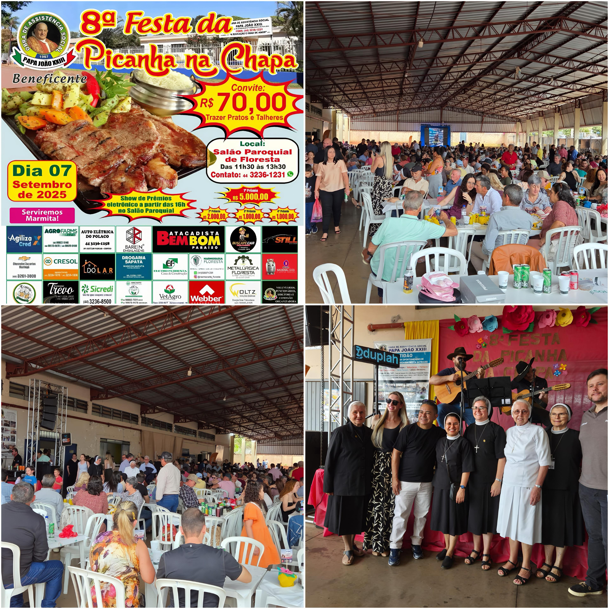

Evento tradicional
Festa da Picanha
A Obra de Assistência Social Papa João XXIII realiza eventos especiais junto à comunidade para fortalecer a convivência, a solidariedade e o espírito de união. Entre eles está a tradicional Festa da Picanha, realizada todos os anos no primeiro ou segundo domingo de setembro.
Em 2025, a 8ª edição foi realizada no dia 07 de setembro, reunindo famílias e amigos para um delicioso almoço, acompanhado de show de prêmios e leilão.